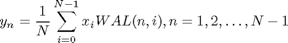
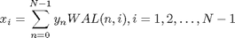
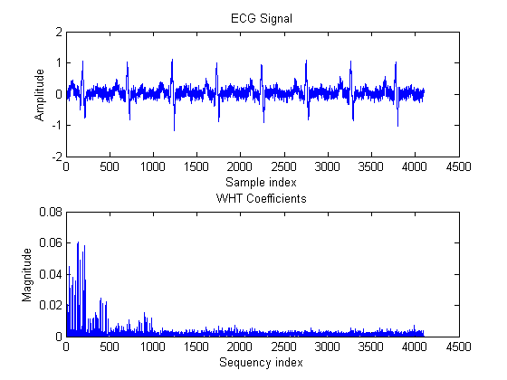
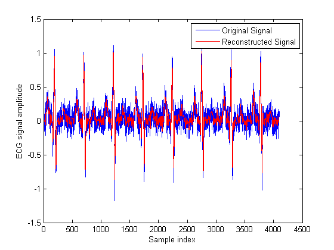
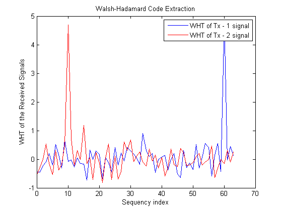

離散ウォルシュ-アダマール変換
目次
はじめに
ウォルシュ-アダマール変換 (WHT) は、信号をウォルシュ関数と呼ばれる一連の基底関数に分解する、非正弦関数による直交変換手法です。この変換には乗数が含まれず、ウォルシュ (またはアダマール) 関数の振幅の値が +1 または -1 の 2 つのみであるため実数になります。
WHT は、パワー スペクトル解析、フィルター処理、音声信号および医療信号処理、通信のマルチプレクスおよびコーディング、非線形信号の特徴付け、非線形微分方程式の解法、論理的な設計と解析などのさまざまな用途で使用されます。
このデモでは、スプレッド スペクトルを使用した通信と ECG 信号処理という 2 つの用途で、ウォルシュ-アダマール変換とそのプロパティの一部について説明します。
ウォルシュ (またはアダマール) 関数
ウォルシュ関数は、-1 または +1 の値を持つ正方波形または矩形波形です。ウォルシュ関数の重要な特徴が、単位時間間隔あたりのゼロクロッシング数から決定される交差数です。各ウォルシュ関数には、一意の交差数値があります。
ウォルシュ関数はさまざまな方法で生成できます ([1] を参照)。この例では、MATLAB® の関数 hadamard を使用してウォルシュ関数を生成します。長さが 8 のウォルシュ関数は次のように生成します。
N = 8; % Length of Walsh (Hadamard) functions
hadamardMatrix = hadamard(N)
hadamardMatrix =
1 1 1 1 1 1 1 1
1 -1 1 -1 1 -1 1 -1
1 1 -1 -1 1 1 -1 -1
1 -1 -1 1 1 -1 -1 1
1 1 1 1 -1 -1 -1 -1
1 -1 1 -1 -1 1 -1 1
1 1 -1 -1 -1 -1 1 1
1 -1 -1 1 -1 1 1 -1
対称的な hadamardMatrix の行 (または列) にウォルシュ関数が含まれています。行列のウォルシュ関数は、その交差数またはゼロクロッシング数の昇順 (交差数順など) で配置されず、"アダマール順" で配置されます。ウォルシュ関数がその交差数の昇順で行または列に含まれているウォルシュ行列は、次のように hadamardMatrix のインデックスを変更して取得します。
HadIdx = 0:N-1; % Hadamard index M = log2(N)+1; % Number of bits to represent the index
交差数インデックスの各列 (バイナリ形式) は、ビット反転したアダマール インデックスの列の 2 を法とする加算 (バイナリ形式) で指定されます。
binHadIdx = fliplr(dec2bin(HadIdx,M))-'0'; % Bit reversing of the binary index binSeqIdx = zeros(N,M-1); % Pre-allocate memory for k = M:-1:2 % Binary sequency index binSeqIdx(:,k) = xor(binHadIdx(:,k),binHadIdx(:,k-1)); end SeqIdx = binSeqIdx*pow2((M-1:-1:0)'); % Binary to integer sequency index walshMatrix = hadamardMatrix(SeqIdx+1,:)% 1-based indexing
walshMatrix =
1 1 1 1 1 1 1 1
1 1 1 1 -1 -1 -1 -1
1 1 -1 -1 -1 -1 1 1
1 1 -1 -1 1 1 -1 -1
1 -1 -1 1 1 -1 -1 1
1 -1 -1 1 -1 1 1 -1
1 -1 1 -1 -1 1 -1 1
1 -1 1 -1 1 -1 1 -1
離散ウォルシュ-アダマール変換
長さ N の信号 x(t) のフォワードおよび逆ウォルシュ変換のペアは、以下のように定義されます。


1 番目のアルゴリズムは、Cooley-Tukey アルゴリズムに類似しており、複雑度 O(NlogN) のウォルシュ-アダマール変換を実装するために開発されました ([1] および [2] を参照)。ウォルシュ行列は対称であるため、フォワード変換および逆変換は、スケーリング ファクター 1/N を除いて同じ演算になります。関数 fwht および関数 ifwht はフォワードおよび逆 WHT をそれぞれ実装します。
例 1 ウォルシュ行列で WHT を実行します。対称ウォルシュ行列の行 (または列) にはウォルシュ関数が含まれているため、単位行列が生成されることが予想されます。
y1 = fwht(walshMatrix) % Fast Walsh-Hadamard transform
y1 =
1 0 0 0 0 0 0 0
0 1 0 0 0 0 0 0
0 0 1 0 0 0 0 0
0 0 0 1 0 0 0 0
0 0 0 0 1 0 0 0
0 0 0 0 0 1 0 0
0 0 0 0 0 0 1 0
0 0 0 0 0 0 0 1
例 2 アダマール行列の任意の列のスケーリングおよび追加によって不連続な信号を作成します。この信号は、重み付きのウォルシュ関数を使用して形成されるため、WHT によって各交差数インデックスの重みに等しいゼロ以外の値が返されます。WHT の評価中、ウォルシュ関数を取得するためにアダマール行列 (ウォルシュ行列ではない) が使用されるため、ordering は 'hadamard' と指定されます。
N = 8; H = hadamard(N); % Hadamard matrix % Construct a signal by adding a few weighted Walsh functions x = 8.*H(1,:)+ 12.*H(3,:)+ 18.*H(5,:)+ 10.*H(8,:); y = fwht(x,N,'hadamard')
y =
8 0 12 0 18 0 0 10
WHT は両方向の変換で、元の信号は、逆変換を使用して完全に復元できます。元の信号と逆変換で得られた信号の間のノルムはゼロに等しく、完全な再構成を示しています。
xHat = ifwht(y,N,'hadamard');
norm(x-xHat)
ans =
0
ウォルシュ-アダマール変換には一連の正方波形を使用する拡張があり、ウォルシュ関数で容易に表現可能な不連続な信号を含む用途で便利です。以下は、ウォルシュ-アダマール変換を使用した 2 つの例です。
ウォルシュ変換の応用
ECG 信号処理 さまざまな時間の患者の心電図 (ECG) 信号を記録する必要がある場合があります。この場合、後で解析や比較を行うためにデータを保存する必要があるため、データが大量になります。ウォルシュ-アダマール変換は、ウォルシュ-アダマール係数をすぐに計算できる、振幅が大きな交差数係数のみを保存するために必要なストレージ スペースが少ない、信号の再構成が速いなどの優れた特徴があり、ECG 信号の圧縮に適しています。
ECG 信号と対応するウォルシュ-アダマール変換は、次のように評価して示されます。
x1 = ecg(512); % Single ecg wave x = repmat(x1,1,8); x = x + 0.1.*randn(1,length(x)); % Noisy ecg signal y = fwht(x); % Fast Walsh-Hadamard transform figure('color','white'); subplot(2,1,1); plot(x); xlabel('Sample index'); ylabel('Amplitude'); title('ECG Signal'); subplot(2,1,2); plot(abs(y)) xlabel('Sequency index'); ylabel('Magnitude'); title('WHT Coefficients');
上記のプロットからわかるように、信号エネルギーのほとんどが低い交差数値に集中しています。調査目的のため、最初の 1024 個の係数のみを保存して元の信号の再構成に使用しました。高い交差数係数を丸めると、ノイズの抑制にも役立ちます。元の信号と再作成された信号は次のようになります。
y(1025:length(x)) = 0; % Zeroing out the higher coefficients xHat = ifwht(y); % Signal reconstruction using inverse WHT figure('color','white'); plot(x); hold on plot(xHat,'r'); xlabel('Sample index'); ylabel('ECG signal amplitude'); legend('Original Signal','Reconstructed Signal');
再作成された信号は、元の信号に非常に近くなります。
元の信号を再構成するため、最初の 1024 個の係数と ECG 信号長のみを保存しました。これは、圧縮率が約 4:1 であることを表します。
req = [length(x) y(1:1024)]; whos x req
Name Size Bytes Class Attributes req 1x1025 8200 double x 1x4096 32768 double
スプレッド スペクトルを使用した通信 CDMA などのスプレッド スペクトル ベースの通信手法では、メッセージ信号を拡散するためウォルシュ コード (ウォルシュ関数から派生) を使用し、それらを逆拡散するため WHT 変換を使用します。ウォルシュ コードは直交するため、ウォルシュエンコード信号は、端末でエンコードに同じコードを使用しない限り、その端末にランダム ノイズとして現れます。以下の例では、拡散に使用されたウォルシュ コードの特定、およびメッセージ信号を復元するための逆拡散の処理について説明します。
2 つの CDMA 端末は、長さが 64 の 2 つの異なるウォルシュ コード (アダマール コードとも呼ばれる) を使用して各メッセージ信号を拡散します。スプレッド メッセージ信号は、分散 0.1 の付加的な白色ガウス ノイズの影響を受けます。
受信側 (基地局) では信号処理は非同期であり、各送信側で使用されるウォルシュ コードを抽出するため、受信した長さ N のシーケンスは 2^N ウォルシュ符号語と対応する必要があります。これは、高速ウォルシュ-アダマール変換を使用して受信信号を交差数領域に変換すると効率的に処理できます。ピークの発生時の交差数位置を使用して、対応するウォルシュ-アダマール コード (またはウォルシュ関数) の使用を特定できます。次のプロットは、交差数 (ordering = 'hadamard') が 60 および 10 のウォルシュ-アダマール コードが第 1 および第 2 送信側でそれぞれ使用されたことを示しています。
load mess_rcvd_signals.mat N = length(rcvdSig1); y1 = fwht(rcvdSig1,N,'hadamard'); y2 = fwht(rcvdSig2,N,'hadamard'); figure('color','white'); plot(0:63,y1,0:63,y2,'r'); xlabel('Sequency index'); ylabel('WHT of the Received Signals'); title('Walsh-Hadamard Code Extraction'); legend('WHT of Tx - 1 signal','WHT of Tx - 2 signal');
メッセージ信号を抽出するための逆拡散 (またはデコード) は、関数 hadamard を使用して生成された各ウォルシュ-アダマール コードを受信信号に乗算するという簡単な方法で実行できます (MATLAB® のインデックスは 1 から始まるので、交差数 60 および 10 のウォルシュ-アダマール コードは、アダマール行列で列 (または行) 61 および 11 を選択すると取得できます)。
N = 64; hadamardMatrix = hadamard(N); codeTx1 = hadamardMatrix(:,61); % Code used by transmitter 1 codeTx2 = hadamardMatrix(:,11); % Code used by transmitter 2
元のメッセージ信号を復元するデコード演算は次のようになります。
xHat1 = codeTx1 .* rcvdSig1; % Decoded signal at receiver 1 xHat2 = codeTx2 .* rcvdSig2; % Decoded signal at receiver 2
受信側の復元されたメッセージ信号は次のようになり、元の信号と重ねて表示して比較することができます。
subplot(2,1,1); plot(x1); hold on plot(xHat1,'r'); legend('Original Message','Reconstructed Message','Location','Best'); xlabel('Sample index'); ylabel('Message signal amplitude'); subplot(2,1,2); plot(x2); hold on plot(xHat2,'r'); legend('Original Message','Reconstructed Message','Location','Best'); xlabel('Sample index'); ylabel('Message signal amplitude');

参照
- K.G. Beauchamp, Applications of Walsh and Related Functions - With an Introduction to Sequency Theory, Academic Press, 1984
- T. Beer, Walsh Transforms, American Journal of Physics, Vol. 49, Issue 5, May 1981